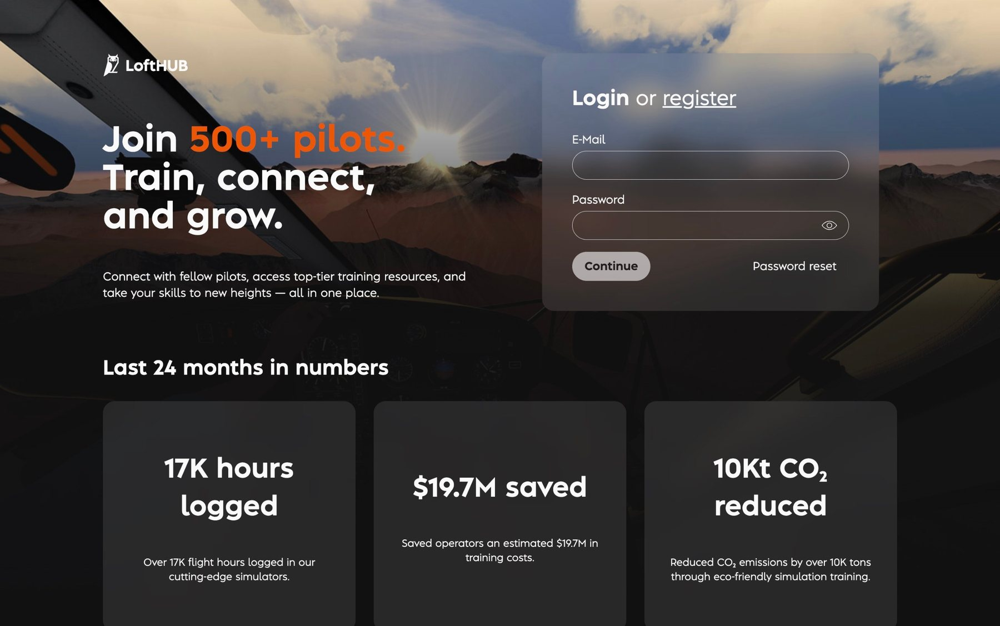

LoftHUB
Redesigned an engineer-built portal nobody used into LoftHUB, a debriefing tool with route maps, data, video and maneuver timelines that helped win new clients.
- Client
- Loft Dynamics
- Country
- Switzerland
- Industry
- Aviation, VR flight simulation
- Year
- 2025–2026
- My role
- UX/UI design, naming workshop, landing page, featured-session videos
- Team
- With Loft’s engineers

Problem
Loft’s engineers had built a customer portal so pilots could look back at their simulator sessions. Almost nobody used it.
- Nothing worth logging in for: only the date, time, location, simulator ID and instructor comments
- Hard to get into: two-factor authentication through an authenticator app only, with no alternatives
Approach
Every decision traces back to evidence. Each step has an ID, and every insight and decision names the evidence it came from.
S001
Source
Pilot and instructor interviews
What they would want to see after a session, and why they didn’t log in.
S002
Source
The engineers behind the portal
What the simulator records, and what could technically be shown.
S003
Source
Naming workshop
A workshop I led to rename the “Customer Portal”.
E001
Evidence
Nothing to come back for
Date, time, location, simulator ID and comments. Nothing about the flight itself.
From S001
E002
Evidence
A locked front door
Two-factor authentication through an authenticator app only.
From S001
E003
Evidence
Data already there
The simulator collects far more than the portal showed.
From S002
I001
Insight
Debriefing is the reason to log in
Pilots want to relive the flight; instructors want an overview for the debrief.
From S001, E001
I002
Insight
Access can’t be the hurdle
A great debrief is worthless if getting in is a chore.
From E002
D001
Decision
A playable debrief
Route map, data graphs, VR recordings and a timeline split by maneuver.
From I001, E003
D002
Decision
Instructor annotations
Dots on the timeline that flag the moments worth debriefing.
From I001
D003
Decision
Smoother onboarding
An easier way in, matching the new brand and website.
From I002
D004
Decision
A name: LoftHUB
One part of the Loft suite, next to Loft Sim and Loft Home.
From S003
Solution
I designed the UX and UI of LoftHUB, led the naming workshop, and worked closely with the engineers who built the original portal to make each new feature technically possible.
Brief, fly, debrief
LoftHUB frames every simulator session. Pilots see their next tasks before the flight, fly the session in Loft Sim, and debrief afterwards, at the simulator or at home on a tablet.


A debrief pilots want to open
Every session now plays back like a flight review, with the instructor’s notes in the right places.
- Flight-route map
- Simulator data graphs, combining several data categories in one graph
- VR screen recordings of the session
- A playable timeline, split into sections by maneuver detection
- Instructor annotations as dots on the timeline
- Smoother onboarding and a full redesign in line with the new Loft Dynamics brand; the website links straight into LoftHUB
Landing page
A LoftHUB homepage showing how much the simulators are used, in hours logged and CO₂ saved compared with training in a real aircraft, with featured-session videos I filmed and edited.

What comes next
- Competition mode, co-designed: a pilot shares a session as a challenge for others, with rankings. Shown at Loft Fest, with the vision of regional and global competition. The same view works for self-improvement: a pilot flies a challenge several times and sees every attempt scored, with the best result and overall progress.
- Highlight videos, cut automatically from the recordings and the instructor’s annotations
- Evidence-based training: comparing sessions and flagging statistical outliers on the timeline

Outcome
Pilots and instructors started using the portal.
LoftHUB also became part of the sales story: it helped Loft Dynamics win new clients and partners, including industry leaders.
“The wireframes, prototypes, user flows, UI designs and design system components he developed stood out for their clear structure, high design quality and consistent focus on user and business requirements.”
 Fabi Riesen, founder and former CEO & CTO · Loft Dynamics · Switzerland
Fabi Riesen, founder and former CEO & CTO · Loft Dynamics · SwitzerlandTranslated from the German reference letter